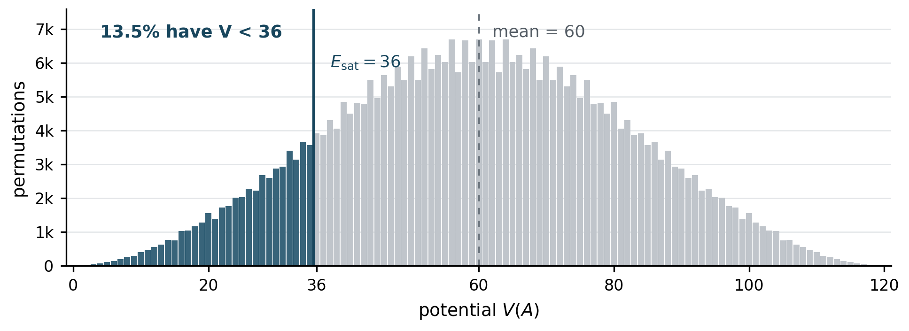

Abstract. A bound on an array’s rank-displacement potential limits single-search cost, but repeated searches can share comparisons spent on the array itself. We give three choices: search without preprocessing, build a sorted index from the maximum-displacement certificate, or build one with an inversion-adaptive sort. The last choice improves the index cost to \(O(n+n\log(1+E/n))\) under a potential promise \(V(A)\le E\); an elementary insertion-sort argument already gives \(O(n+E)\). We keep preprocessing and query comparisons in one accounting model, and distinguish lower bounds for complete indexing from those for repeated search.
Historical orientation
The classical comparison model separates two tasks. An unordered array may require a linear scan for one search, while a sorted array supports binary search. Producing a sorted index costs \(\Theta(n\log n)\) comparisons in the unrestricted worst case [1]. Fredman’s work on sorting with prior information asks how a restricted set of possible orders changes that cost [2]. A disorder promise is one form of such information, provided the work needed to obtain the promise is not silently omitted.
Mannila treated measures of presortedness as algorithmic resources [3]. In particular, the number of inversions supports adaptive sorting: Elmasry and Fredman give an \(O(n)\)-space algorithm using \(n\log_2(1+I/n)+O(n)\) comparisons when the input has \(I\) inversions [5]. On the search side, bounded displacement is a useful certificate for searching nearly sorted arrays [4]. The first paper in this series converts the squared rank-displacement potential into such a certificate and proves a tight one-query bound [6]. This note joins those two routes to a reusable sorted index.
Model and the one-query baseline
Let \(A=(a_1,\ldots,a_n)\) contain \(n\ge2\) distinct keys from a totally ordered universe, and let \(x_i\) be the sorted rank of \(a_i\). Define \[V(A)=\frac12\sum_{i=1}^n(x_i-i)^2,\qquad d(A)=\max_i|x_i-i|,\qquad V(A)\le E.\] The supplied promise \(V(A)\le E\) says nothing about the actual ranks available to an algorithm. The displacement lemma of [6] gives \[d(A)\le D_E:= \min\left\{n-1,\left\lfloor\frac{\sqrt{1+8E}-1}{2}\right\rfloor\right\}, \qquad R_E=D_E+1.\] Indeed, moving one item by \(d\) positions requires at least \(d\) units of opposing displacement; hence \(2V(A)\ge d^2+d\). Without preprocessing, a modified binary search followed by a scan uses \(O(\log n+R_E)\) target-to-key comparisons. The matching lower bound in [6] moves a new minimum past \(j-1\) keys at potential \(j(j-1)/2\). Thus the one-query minimax cost is \(\Theta(\log n+R_E)\).
Now keep the array fixed for \(q\ge1\) searches. Preprocessing may compare array keys and retain an \(O(n)\)-word index. Each later query compares its target with array keys and returns the matching position or absence. All preprocessing comparisons and target comparisons are charged. With \(\mathcal H_{t-1}\) denoting retained search history, define \[T_q^*(n,E)=\inf_{P,S} \sup_{\substack{A:\,V(A)\le E\\y_1,\ldots,y_q}} \left[C_P(A)+\sum_{t=1}^q C_S(y_t\mid A,P,\mathcal H_{t-1})\right].\] The promise is supplied, as in the first paper. Certifying it from raw keys would be additional preprocessing work. A complete sorted index is an array of the original positions in increasing key order; once built, it supports every search in \(O(\log n)\) comparisons.
Potential as a weighted inversion count
Write \(I(A)=|\{(i,j):i<j,\ x_i>x_j\}|\) for the inversion count. The same potential used for the displacement bound has another exact form.
Lemma 1 (Weighted inversions). For every rank word \(x\), \[V(A)=\sum_{\substack{i<j\\x_i>x_j}}(x_i-x_j)\ \ge\ I(A).\]
Proof. Sort the rank word by swapping adjacent inverted ranks \(a>b\). Such a swap reduces \(V\) by exactly \(a-b\): the squared-displacement terms at the two affected positions give this difference directly. An inversion-removing adjacent-swap sort crosses each originally inverted pair once and ends with potential zero. Summing its decreases proves the identity. Every rank gap in the sum is at least one. ◻
The lemma converts the supplied bound \(V(A)\le E\) into \(I(A)\le E\). It does not reveal the inversion locations. It gives an algorithmic choice because inversion-adaptive sorting needs no advance list of those locations.
Three preprocessing choices
Theorem 1 (Repeated-search upper bound). For \(n\ge2\), \(E\ge0\), and \(q\ge1\) in the model above, \[\boxed{\displaystyle T_q^*(n,E)=O\!\left( q\log n+\min\left\{ qR_E,\quad n\log(R_E+1),\quad n\bigl[1+\log(1+E/n)\bigr] \right\}\right).}\] All logarithms are base \(2\). If \(E=0\), the array is already sorted and no preprocessing comparisons are needed.
Proof. Search directly. Use the bounded-displacement search for each target. This spends no preprocessing comparisons and \(O(q\log n+qR_E)\) comparisons in total.
Index from displacement. The key of rank \(k\) lies by position \(k+D_E\). Start a min-heap containing positions \(1,\ldots,\min\{n,D_E+1\}\). Extract its minimum and insert the next unread position, repeating until all keys are output. Before the \(k\)th extraction, the heap contains every unread key among the first \(\min\{n,k+D_E\}\) positions, including rank \(k\). It therefore emits the sorted order using a heap of size at most \(R_E\). This costs \(O(n\log(R_E+1))\) array-key comparisons and \(O(n)\) words. Search the resulting index by binary search for another \(O(q\log n)\) comparisons.
Index from inversions. First, a self-contained weaker choice is ordinary insertion sort applied to an array of positions. Each successful backward comparison removes one inversion, and there is at most one stopping comparison per inserted key. It uses at most \(I(A)+n-1\le E+n-1\) array-key comparisons and \(O(n)\) words. The inversion-adaptive algorithm of Elmasry and Fredman [5] strengthens this to \(n\log(1+I(A)/n)+O(n)\) comparisons using \(O(n)\) space; it does not need to know \(I(A)\) beforehand. Lemma Lemma 1 bounds this by \(n\log(1+E/n)+O(n)\). Retain the resulting sorted positions and binary-search them for the \(q\) targets. Choosing the cheapest of the three strategies proves the theorem. ◻
The third branch matters when total disorder is small but the largest possible displacement is not. For example, if \(E=\Theta(n)\), then \(R_E=\Theta(\sqrt n)\). The heap branch can spend \(\Theta(n\log n)\) comparisons building an index, while adaptive sorting spends \(O(n)\). The crossover against repeated direct search is then \(qR_E\asymp n\), up to constants. For large \(E\), either indexing method may cost \(\Theta(n\log n)\); the minimum retains both. The theorem is an upper bound on the combined problem, not a claim that each of its three terms is necessary.
Regimes and examples
The new branch has the strongest effect before the scalar displacement certificate saturates. Compare the index-construction expressions \[B_{\mathrm{disp}}(n,E)=O(n\log(R_E+1)),\qquad B_{\mathrm{inv}}(n,E)=O\!\left(n\left[1+\log(1+E/n)\right]\right).\] For \(E=0\), the promise itself identifies sorted order. For \(1\le E=O(n)\), the inversion branch costs \(O(n)\), while the heap expression may grow to \(\Theta(n\log n)\) as \(E\) approaches \(n\). For \(n\ll E\ll n^2\), the adaptive logarithm depends on \(E/n\); the heap logarithm depends on roughly \(\sqrt E\). When \(E\ge n(n-1)/2\), the displacement certificate has saturated at \(R_E=n\), and the heap uses \(O(n\log n)\) comparisons. The inversion branch also gives at most \(O(n\log n)\) because no permutation has more than \(\binom n2\) inversions. These statements compare construction guarantees; the theorem chooses between constructing an index and searching directly for a given \(q\).
Two small families clarify what the potential does and does not reveal. First, swap \(k\) disjoint adjacent pairs in an otherwise sorted array. Then \(V=I=k\) and \(d=1\). A supplied scalar budget \(E=k\) allows much larger displacement on other arrays, so the one-query worst-case search cost still depends on \(R_E\); a full index can be built in \(O(n)\) comparisons when \(k=O(n)\). Second, move the minimum from position \(j\) to position \(1\) while shifting the preceding \(j-1\) items right. Then \[V=\frac{j(j-1)}2,\qquad I=j-1,\qquad d=j-1.\] This input attains the displacement obstruction behind the first paper’s search lower bound, yet its inversion count is only linear in \(j\). An inversion-adaptive sorter takes \(O(n)\) comparisons on this particular input, even when the general bound based on its potential budget is larger. The reverse permutation provides the opposite scale: \(V=n(n^2-1)/6\) and \(I=n(n-1)/2\), so both full-index strategies have the familiar \(O(n\log n)\) guarantee.
The exact \(n=9\) histogram below illustrates where a tight scalar budget still narrows the displacement window. Here \(E_{\mathrm{sat}}=n(n-1)/2=36\): a promise \(E=V(A)<36\) gives \(R_E<n\). Exactly \(48{,}913\) of the \(362{,}880\) uniform permutations, or \(13.5\%\), fall in that low-potential tail. This is a coverage calculation, not a certificate for an unknown input. More generally, a uniform shuffle typically has \(V=\Theta(n^3)\), beyond the \(\Theta(n^2)\) saturation scale [7]. The improved preprocessing bound is therefore most informative for input classes that favor near-sorted order. It remains a worst-case guarantee for every array covered by its stated budget.

What lower bounds do and do not say
The full sorted-index task has a simple linear obstruction whenever \(E\ge1\). On a sorted input, swap the keys at any adjacent pair of positions. Each alternative has potential one. Every comparison except that pair’s direct comparison has the same outcome as on the sorted input. A method that must output the entire sorted index therefore compares all \(n-1\) adjacent pairs on the sorted input. Consequently, full indexing requires \(\Omega(n)\) comparisons for \(E\ge1\), and the inversion-adaptive branch is optimal up to constants for that task when \(E=O(n)\).
Exact potential counts offer another, weaker, information bound. If \(c_n(v)\) is the number of rank words with potential \(v\), put \(N_{n,E}=\sum_{v\le E}c_n(v)\). A comparison tree that outputs a full sorted index for every promised rank word needs at least \(\lceil\log_2N_{n,E}\rceil\) comparisons in the worst case. The random-permutation histogram gives these counts exactly for \(n=9\), including its small parity oscillations. Neither this count nor the linear indexing obstruction automatically lower-bounds \(T_q^*\): an optimal repeated-search method may build only part of an index. The smallest nonzero budget shows why cardinality alone is incomplete. At \(E=1\), the bound \(\sum_i(x_i-i)^2\le2\) forces either zero displacement or two opposite unit displacements. The only allowed rank words are therefore the sorted order and its \(n-1\) possible adjacent swaps, so \(N_{n,1}=n\). Its information bound is merely \(\lceil\log_2 n\rceil\), while the adjacent-pair adversary above forces \(n-1\) comparisons to output the complete index on the sorted input. The arrangement of feasible orders matters as well as their number.
There is a separate lower bound when history retains only prior target-to-entry signs and no array-key comparisons are allowed. Run the searcher on a sorted array with increasing absent targets \(y_1<\cdots<y_q<a_1\). In round \(t\), replacing position \(j\le R_E\) by \(y_t\) gives an allowed array of potential \(j(j-1)/2\). Earlier targets remain below every entry in both arrays. Unless the searcher checks position \(j\) in that round, its comparison signs match the sorted case despite a different correct answer. Thus all first \(R_E\) positions must be checked each round, for \(\Omega(qR_E)\) target comparisons in this restricted model. Array-key preprocessing can escape this argument; it is precisely what the two index strategies pay for.
Certificates and scope
A learned rule may propose a smaller displacement bound, likely key locations, or a partial index. Only a verified guarantee can be used for worst-case correctness. If \(B\) array-key comparisons certify \(d(A)\le D'\), the first paper’s search gives \[\text{total cost}\le B+O\!\left(q\log n+q(D'+1)\right).\] For example, checking all \(n-1\) adjacent pairs certifies sortedness. This is worthwhile only when enough later searches use that fact. A full sorted index also reveals every actual rank, and hence the actual displacement, without further key comparisons once it is built. At that point the index itself supports binary search; a separate displacement certificate adds no search power. The interesting intermediate case is a cheaper partial certificate that reduces the residual scan before all ranks have been learned. The comparisons used to obtain a smaller certificate belong in \(B\). A mere prediction of \(D'<D_E\) is not valid over every input allowed by \(V(A)\le E\): some such inputs attain \(D_E\).
The refined upper bound shows two ways that the same potential promise can subsidize an index. Its maximum-displacement consequence powers the heap; its weighted-inversion consequence powers adaptive sorting. The exact distribution of potential across random permutations describes how often a budget covers an input, while the theorem holds for every array covered by that budget. A matching lower bound for the full preprocessing-versus-query tradeoff remains open here. The theorem compares one strategy with no array comparisons and two strategies that build a complete sorted index. It does not rule out partial preprocessing that lies between those endpoints. Such a result would need a lower-bound model that tracks what array comparisons reveal about future target locations, as well as an algorithm that charges every comparison used to obtain its certificate. Exact level-set counts are useful input for that study, but cannot by themselves certify the cost of a search strategy.
References
- D. E. Knuth. The Art of Computer Programming, Volume 3: Sorting and Searching. Addison-Wesley, 1973; 2nd ed., 1998. Author’s publication page.
- M. L. Fredman. How good is the information theory bound in sorting? Theoretical Computer Science 1(4):355–361, 1976. doi:10.1016/0304-3975(76)90078-5.
- H. Mannila. Measures of presortedness and optimal sorting algorithms. IEEE Transactions on Computers C-34(4):318–325, 1985. doi:10.1109/TC.1985.5009382.
- Y. Disser and S. Kratsch. Robust and adaptive search. STACS 2017, LIPIcs 66, 26:1–26:14. doi:10.4230/LIPIcs.STACS.2017.26.
- A. Elmasry and M. L. Fredman. Adaptive sorting: an information theoretic perspective. Acta Informatica 45:33–42, 2008. doi:10.1007/s00236-007-0061-0.
- J. R. Landers. Disorder Potential and the Cost of Search, version 2, 2026. HTML edition.
- J. R. Landers. Potential Across Random Permutations, companion note, 2026. HTML edition.